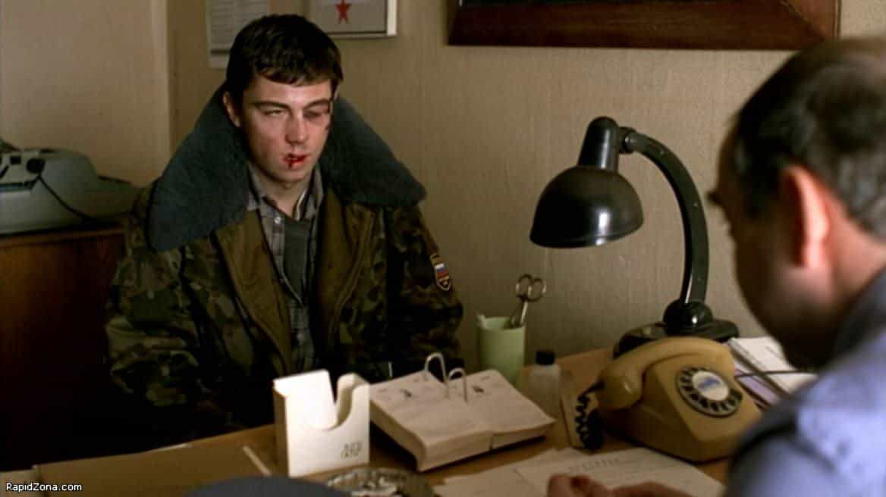

< < < Back
The Red Pill Masterpiece That Predates Them All – Return Of Kings
Like me, you now sigh every time you skim-read the synopsis of the new LGBT agenda-approved blockbuster that the septic tank of Hollywood releases which usually stars:
- An anorexic AIDS ridden cowboy teams up with a love-starved transexual on a fabulous journey to the Open Borders Districts of America.
- Carpet muncher falls in love with female tortured artist or heroin addict next door
- A female remake of Ghostbusters sponsored by Cheetos and Whiskas, a Clinton-approved work of art and recipient of the IngSoc Academy award.

Should have put the muzzle on his balls for more self-inflicted humiliation
Where are the mythical heroes, triumphing against all odds? Now Mad Max waits patiently in the car while a bonehead empowered you go grrrrl takes the decisions.
It seems that we have to turn towards Russia once more for our recommended daily dose of normal masculinity.
As red pill and cold-blooded as it gets
“Brother” (“Brat” in Russian) is a 1997 movie directed by Alexey Balabanov. It is seen by many as the one of the greatest gangster movie of all time and changed forever the image of the traditional justice-seeking hero.
It has been a few years at least that I want to share my discovery of this film with our readers. It had a tremendous impact on the way I see the world and the attitude I have towards life. I was convinced of its quality, of the impact it could have on the disciples of the red pill and that a few lines cannot do justice to this giant of Russian cinema culture. It entirely deserves an article of its own.
My brother, the criminal

Enter Danila Bagrov, played by the stellar Sergey Bodrov, who died at 28, at the peak of his meteor-like career. Many called him the Russian James Dean.
After serving in the bloody war theatre of Chechnya, young veteran Danila returns home, in the sleepy provincial town of Tula.
Needing money and without any solid prospects, he joins his brother Vytia who works as a hitman for the local “well-dressed businessman” in Saint Petersburg. Being an expert in making rudimentary weapons and with his quick capacity of reaction and frugality, Danila adapts marvelously to his new occupation.
After seeing the risk of a gifted concurrent stealing their livelihood, the city’s gangsters soon put a price on his head and send a few professionals to tie up this loose end. But even after being betrayed by a mix of greed and cowardice, young Danila Bagrov decides to take on the mob single handedly.
An epitome of the Russian alpha. Hard and unforgiving, sober in words and in behaviour, for whom nothing counts more than the bonds of blood and brotherhood.
To err is human
His one soft spot is the faith he has in human nature, convinced that if he does good, his fellow man will be virtuous in return. He could not be more wrong, especially with women. He discovers very fast that beta moves like buying them gifts and helping them only brings him trouble or ungratefulness.
What is rare and makes Danila stand out is his loyalty, a cornerstone of the definition of masculinity and a value that progressively vanishes nowadays. His brother will do the unthinkable. But after the storm clears and Danila emerges victorious, he proves once more his quality as a man by being magnanimous and giving him a second chance.
No fancy green screen or politically correct themes
Brat is good because it is painfully real and does not embellish the lawless chaos that was early post-Soviet Russia. This is how it felt when the Wall came down. Everyone was trying to survive the best way they could.
The odd, low-quality orange filter used in the film reminds us of this period where everything was made from what people could find when the shelves where empty.
You cannot go wrong with a good revenge movie and Danila is an example of bravery. Alone and against all odds, he takes on the mafia that wronged him and will make them pay.
The man says it like it is
His analysis of the city and its perverse influence on men is brutally accurate:
Danila: You told me about the city, about its strength. But here, everyone is weak.
Hoffman: The city is a great and terrible force. It sucks the life force out of the strong – turns them weak. It takes away your power. And you fell right in the middle of it.
His opinion about the abuse of power and the corrupt elites that would kill mother and father for their own profit and the final victory of truth applies especially well to today’s political and social context.
American, what’s your power? Is it really money? My brother says it’s money. You’ve got lots of money – so what?
Truth is a real power. Whoever is right is strong. You cheated on a man and took away his money. Did it make you stronger? No, it did not, ’cause you are not right, and the person you cheated on is. That means he’s stronger. Right?
“Brother” also drops lethal truths about women and their ways. After spending all his roubles buying drinks and dope for a young interchangeable skank, she tells Danila:
Kate: Do you have condoms?
Danila: Why?
Kate: ‘Why? You really think I will give you back your money? Come here…
Two brothers for two majestic films
The second volume, simply titled “Brother 2”, breaks the stereotype that sequels are always awful and is at least as good, if not better than the original.
Same characters are followed but this time, Danila’s brother in arms has been played by a crooked American businessman, in touch with the Muscovite mafia. They attacked his brothers once more and he will have this time to cross the Atlantic to reclaim what is rightfully his.
Again, the movie is realistic, gritty but has a lighter outlook on life. Whereas in the first volume, the main character showed a sheer hatred for everything that came from America and corrupted his country, the sequel that involves Danila’s adventures and clueless discovery of American culture often results in hilarious encounters.
Un film qui prend aux tripes
If the red pill was a religion, Danila Bagrov could be its patron saint. You can watch it legally following this link which includes English subtitles. The firm KinoKompania STV that produced the film decided to release it online, the film being such a household name in Russia and worldwide.
Needless to say that you have watch it in the original Russian. The second opus can also be found online with English subtitles and Russian audio.
Don’t miss out on these monuments of Russian cinema.
Read More: You’ve Already Seen One Of The Greatest Red Pill Movies Ever Made